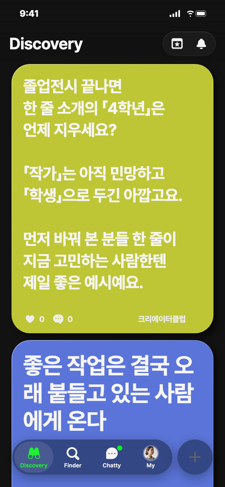
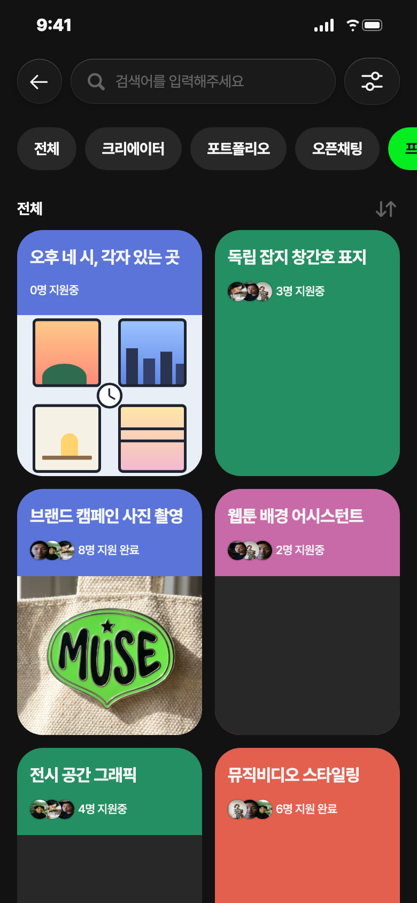
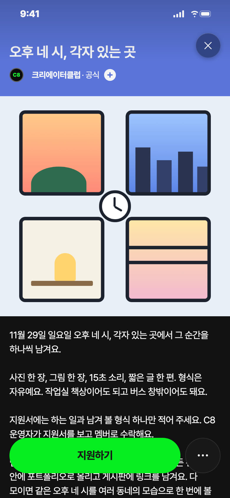
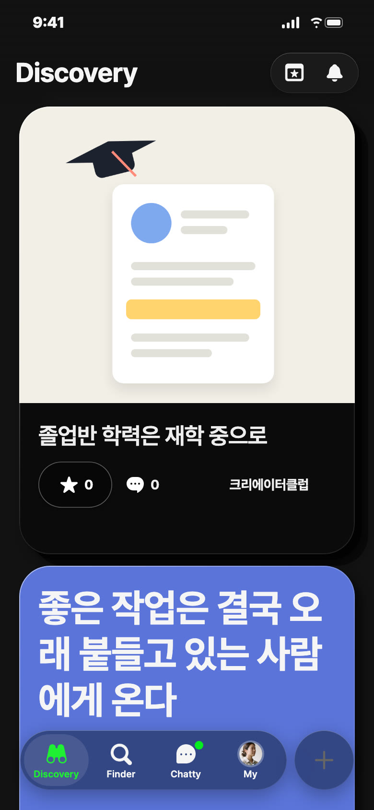
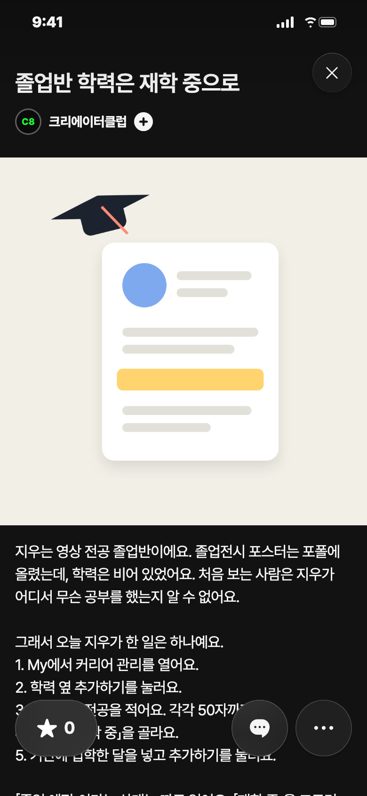

C8 앱 게시 시안 · 11/9(월) — 오늘 추천: 영감 · 낮 12시
오늘 추천 · 영감 · 월 11/9 낮 12시 · 노랑

칸: 일 받기 × 공감(한 줄 소개)
왜 오늘: 졸업전시 철, 한 주 시작에 내 소개를 다시 보게
보낼 사람: 졸전 끝난 동기에게 「너 소개 아직 4학년이지」
받고 싶은 댓글: 「'영상 만드는 ○○'으로 바꿨어요. 직함보다 하는 일을 쓰니 덜 민망해요」
영감 글
졸업전시 끝나면 한 줄 소개의 「4학년」은 언제 지우세요? 「작가」는 아직 민망하고 「학생」으로 두긴 아깝고요. 먼저 바꿔 본 분들 한 줄이 지금 고민하는 사람한텐 제일 좋은 예시예요.
비축 · 프로젝트 · 파랑


칸: 함께 만들기 × 놀이
왜 비축: 수요일 프로젝트 자리, 46 출시·운영자 확인 뒤
보낼 사람: 매일 작업은 하는데 올릴 게 없다는 친구에게 「일요일 4시에 그거 하나만 찍어」
받고 싶은 지원: 「일러스트 · 작업실 창밖을 그릴게요」
제목
오후 네 시, 각자 있는 곳
카테고리
함께 만들기
모집 내용
하는 일과 남겨 볼 형식 하나 · 11/29(일) 오후 4시 · 상품 없음
설명
11월 29일 일요일 오후 네 시, 각자 있는 곳에서 그 순간을 하나씩 남겨요. 사진 한 장, 그림 한 장, 15초 소리, 짧은 글 한 편. 형식은 자유예요. 작업실 책상이어도 되고 버스 창밖이어도 돼요. 지원서에는 하는 일과 남겨 볼 형식 하나만 적어 주세요. C8 운영자가 지원서를 보고 멤버로 수락해요. 멤버가 되면 그 시각이 일정에 올라가 있어요. 만든 건 그날 안에 포트폴리오로 올리고 게시판에 링크를 남겨요. 다 모이면 같은 오후 네 시를 여러 동네의 모습으로 한 번에 볼 수 있어요. 상품은 없어요. 남는 건 내 포폴 하나와, 같은 시각에 뭔가 만든 사람들이에요.
비축 · 포트폴리오


칸: 앱 소개 × 쓸모 · 연재 3편 후보
왜 비축: 화요일 연재 자리(2편 「외주도 경력 칸에」 다음)
보낼 사람: 졸업 앞둔 동기에게 「학력 비어 있으면 학생인지도 몰라」
받고 싶은 댓글: 부탁 안 함
사진 2장: 1 커버(학사모와 프로필 한 줄) · 2 학력 추가하기 화면을 지우 값으로 채운 모습
제목
졸업반 학력은 재학 중으로
설명
지우는 영상 전공 졸업반이에요. 졸업전시 포스터는 포폴에 올렸는데, 학력은 비어 있었어요. 처음 보는 사람은 지우가 어디서 무슨 공부를 했는지 알 수 없어요. 그래서 오늘 지우가 한 일은 하나예요. 1. My에서 커리어 관리를 열어요. 2. 학력 옆 추가하기를 눌러요. 3. 학교명과 전공을 적어요. 각각 50자까지예요. 4. 상태는 「재학 중」을 골라요. 5. 기간에 입학한 달을 넣고 추가하기를 눌러요. 「졸업 예정」이라는 상태는 따로 없어요. 「재학 중」을 고르면 졸업일 칸은 꺼져 있어요. 졸업하고 상태를 「졸업」으로 바꾸면 그때 졸업일을 넣을 수 있어요. 지우 커리어 관리에는 이제 「한빛예술대학교 · 영상디자인」 한 줄이 생겼어요. 졸업하는 날엔 그 한 줄의 상태만 바꾸면 돼요. 지우와 학교 이름은 C8이 지어낸 거예요. #지우따라하기 #커리어관리